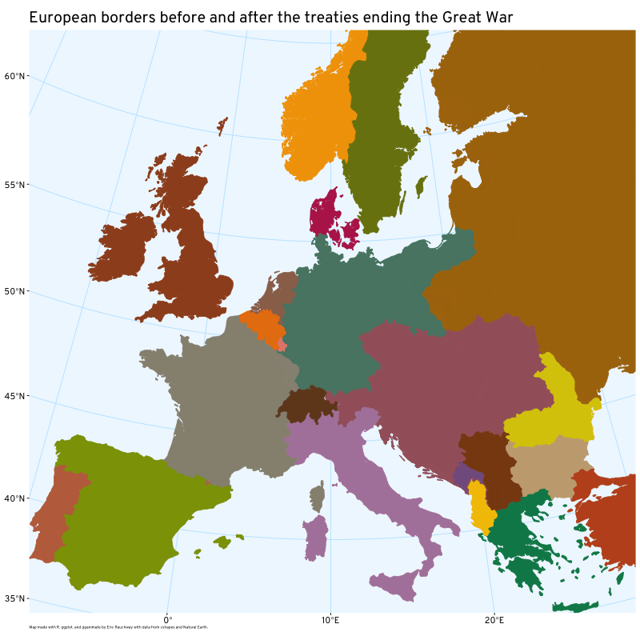
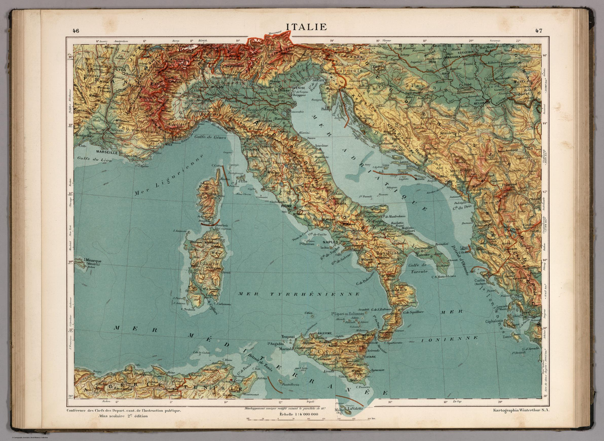

Reluctant hegemon
HIS 187
Previously
- Economic powerhouse
- Militarily modest
Wilson’s peace formulas
- “peace without victory”
- “self-determination”
- “safe for democracy”
Fourteen points
- open covenants
- freedom of navigation and trade
- colonial adjustment
- general association of nations
Paris Peace Conference
1918–1919
Three treaties
- Versailles (Germany)
- St. Germain (Austria)
- Trianon (Hungary)

Self-determination for some
Racial equality proposal
Economic consequences
Then there was John Maynard Keynes, the British Treasury representative. At the end of October, 1918, Keynes began thinking about how the effort to extract reparations from Germany might work, and what effect it would have. There was, of course, Germany’s movable wealth - its gold, for a start - but once that was taken from it, what capacity to pay remained? In “Notes on an Indemnity,” Keynes made two sets of calculations for reparations payments - one, “without crushing Germany,” and a higher one, “with crushing Germany.” His concern about “crushing Germany” derived not from his sympathy for the Germans; it appeared he had none worth noting. But Keynes was worried that crushing Germany would create two kinds of problems.
First, it would poorly serve the Allies by preventing the Germans from paying the penalty. Left without sufficient capital to meet their own needs, the Germans would have to get that capital elsewhere. A too-large reparations tab would thus “defeat its object by leading to a condition in which the allies would have to give [Germany] a loan to save her from starvation and general anarchy.” The revised version of Keynes’s memorandum put the concept more vividly: “If Germany is to be ‘milked’, she must not first of all be ruined.”
Debate over whether Germany ruined, or allowed itself to be ruined rather than pay
Maybe even more concerning to him was what was absent from the peace. “The Treaty includes no provisions for the economic rehabilitation of Europe … or to adjust the systems of the Old World and the New.”
There will be “depression of the standard of life…. Men … in their distress may overturn the remnants of organisation, and submerge civilization itself….”
http://www.freeinfosociety.com/media.php?id=1192
League of Nations, Geneva
Annexationists, 1921

Hyperinflation, 1923
Dawes Plan, 1924
- Restructure German debt
- short-term loan to Germany
- French withdrawal from Ruhr